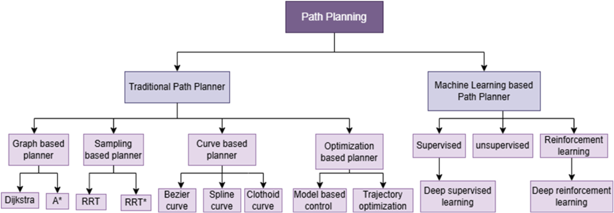

1.0 Mapping & SLAM Architecture Evaluation
1.1 Mathematical Mechanics of Evaluated SLAM Algorithms
To determine the optimal mapping backend for long-distance runway infrastructure, four modern SLAM algorithms were evaluated against computational overhead, loop closure accuracy, and long-range spatial scaling:
Formulates SLAM as a Pose Graph Optimization (PGO) problem using Karto scan-matching paired with Google's non-linear Ceres Solver. Minimizes the sum of squared Mahalanobis distances over pose vertices:
Where $\mathbf{e}_{ij} = \mathbf{z}_{ij} - \hat{\mathbf{z}}_{ij}$ is the measurement residual and $\mathbf{\Omega}_{ij}$ is the information matrix.
Constructs local submaps via Ceres scan matching, and enforces global loop closures through a real-time Branch-and-Bound (BnB) multi-resolution raster matcher:
Failure Mode: BnB complexity scales exponentially $O(2^d)$ across $5\text{ km}$ runways, consuming >92% CPU on edge hardware.
Employs a Rao-Blackwellized Particle Filter (RBPF) factoring the joint SLAM posterior into trajectory and map distributions:
Failure Mode: Memory scales as $O(P \cdot M)$. Over $5000\text{ m} \times 60\text{ m}$, particle depletion causes irrecoverable map warping.
Pure scan-matching SLAM based on Gauss-Newton non-linear gradient optimization on multi-resolution occupancy grids:
Failure Mode: Has no loop closure backend and relies on high scan rates without odometry; diverges catastrophically on open runways.
1.2 The Open Runway Scan-Matching Degeneracy Problem
Standard 2D LiDAR scan matching minimizes the point-to-line Euclidean residual error between successive laser scans:
On an active airport runway measuring $60\text{ m}$ wide by $4000\text{ m}$ long with flush pavement edges, the environment is featureless along the longitudinal axis ($X$). The spatial intensity gradient $\nabla I_x \approx 0$, causing the Hessian matrix $\mathbf{H} = \mathbf{J}^T \mathbf{J}$ to become ill-conditioned with near-zero eigenvalues:
Consequently, longitudinal position drifts unbounded if pure laser odometry is utilized. SLAM Toolbox overcomes this via asynchronous graph fusion with dual-antenna RTK-GNSS pose priors, constraining the pose covariance matrix $\mathbf{\Omega}_{\text{prior}}$ and eliminating singular value collapse.
1.3 Lifelong Submap Serialization & Linear Memory Scaling
Conventional SLAM frameworks retain the entire global graph in volatile RAM, resulting in $O(N^2)$ memory and compute growth during graph optimization over multi-kilometer sweeps. SLAM Toolbox solves this via Submap Serialization:
- Local Active Window: Only the current active submap ($M_{\text{active}}$) and adjacent submaps are maintained in active memory for real-time laser scan matching ($50\text{ Hz}$).
- Disk Serialization: Completed submaps and their associated laser scans are serialized to non-volatile NVMe storage in compressed binary chunks (`.posegraph` and `.data` files).
- $O(N)$ Linear Scaling: The Ceres optimization solver only optimizes the boundary anchor nodes between submaps, allowing $5\text{ km}$ runways to be mapped with stable RAM consumption below $450\text{ MB}$.
In Phase 1 simulation (NUS EA Field), an ultra-high-resolution ($0.05\text{ m/px}$) aerial orthophoto was georeferenced and imported into Nav2's static map server. The digital twin map editor established deterministic obstacle boundaries (pavement edges, perimeter fencing, curbs), allowing global and local path planners to be validated prior to live LiDAR SLAM field trials.
2.0 Global Path Planning Algorithms & Kinematic Mechanics
2.1 Path Planning Taxonomy & Engineering Design Space
Path planning in mobile robotics is broadly partitioned into Traditional (deterministic graph, sampling, curve, and optimization models) versus Machine Learning-based paradigms. To select the safest, most deterministic navigation framework for active airfield deployment, all major planning branches were surveyed and benchmarked:

Deterministic, resolution-complete search across costmaps. Fast and provably optimal, but standard 2D variants suffer from grid discretization kinks that violate non-holonomic turning radii.
Probabilistically complete in high-dimensional spaces. Rejected for global runway routing due to non-deterministic runtimes and jagged exploratory paths unsuitable for linear $\ge 10\text{ km/h}$ sprints.
Enforces continuous curvature ($G^1/G^2$). Dubins curves were selected as motion primitives within SmacPlannerHybrid to enforce $R_{\min} \ge 1.50\text{ m}$ forward trajectories on tarmac.
End-to-end policy networks. Rejected for primary safety-critical navigation due to lack of deterministic safety certificates under FAA AC 150/5220-24 and unconstrained sim-to-real transfer risk.
2.2 In-Depth Mathematical Analysis of 5 Global Path Planning Algorithms
Nav2 provides multiple global path planning plugins across 2D grid searches, any-angle geometric planners, and non-holonomic state lattices. To establish optimal trajectory generation for a heavy $65.0\text{ kg}$ 4WD skid-steer operating at $\ge 10\text{ km/h}$, all five primary global algorithms were analyzed:
Computes cost-to-goal potentials via Dijkstra or $A^*$ wave-front propagation across 4/8-connected cells, then follows gradient descent:
Limitations: Strictly 2D without orientation $(\theta)$ awareness, producing jagged $45^\circ / 90^\circ$ corners that force skid-steer stalls.
Optimized 2D $A^*$ with cost-aware heuristic function that discourages high-cost inflation zones, plus path smoothing:
Limitations: Smoothed paths still lack non-holonomic guarantees, potentially violating $R_{\min} \ge 1.50\text{ m}$.
Bypasses grid-constrained edges via continuous Line-of-Sight (LOS) Bresenham visibility checks between non-adjacent parent vertices:
Limitations: Reduces path length by $8\text{--}13\%$, but produces discontinuous tangent angles $(\Delta \theta)$ causing lateral jerk.
Samples control actions from a precomputed lookup table (LUT) containing kinematically feasible motion primitives:
Limitations: High planning fidelity, but requires heavy offline primitive generation and larger memory scaling.
Operates in a 3D continuous configuration space $(x, y, \theta)$ with analytical Dubins expansions, enforcing minimum turning radius constraints ($R_{\min} \ge 1.50\text{ m}$) directly during search. Completely eliminates sharp polygonal kinks, preventing tarmac scrub torque and bus overcurrent trips.
| Algorithm | Search Space | Kinematic Feasibility | Curvature Continuity | Computational Scaling | Tarmac Skid Risk | Runway Suitability |
|---|---|---|---|---|---|---|
| NavFn | 2D Discrete $(x, y)$ | None (Holonomic) | $C^0$ Discontinuous | $O(V \log V + E)$ | Severe (In-Place Spins) | Rejected |
| SmacPlanner2D | 2D Grid + Heuristic | Low (Post-Smoothed) | $C^1$ Approximate | $O(V \log V)$ | Moderate ($R < R_{\min}$) | Suboptimal |
| Theta* | 2D Any-Angle $(x, y)$ | None (Line-of-Sight) | $C^0$ Kinks | $O(V \log V \cdot \text{LOS})$ | High (Corner Stalls) | Rejected |
| SmacPlannerLattice | $SE(2)$ Discrete $(x, y, \theta_d)$ | High (LUT Bound) | $C^1$ Continuous | $O(B^d)$ (Branching $B$) | Low (Feasible Trajectory) | Feasible |
| SmacPlannerHybrid | $SE(2)$ Continuous $(x, y, \theta)$ | Guaranteed ($R_{\min} \ge 1.50\text{ m}$) | $G^2$ Dubins Continuous | $O(N)$ with Shot-to-Goal | Zero ($\tau_{\text{skid}} < \tau_{\text{stall}}$) | Selected Production |
2.3 Physical Problem Statement: Tarmac Scrub Torque & Bus Collapse
When a $65.0\text{ kg}$ 4-wheel skid-steer vehicle executes an in-place turn or sharp pivot on dry runway tarmac (friction coefficient $\mu \approx 0.80$), the lateral tire scrub torque per motor is expressed as:
With a motor torque constant $K_t \approx 1.057\text{ N}\cdot\text{m/A}$, the electrical current required per motor during an in-place zero-radius spin is:
Drawing $>74.6\text{ A}$ from the $48\text{V}$ bus ($>3.58\text{ kW}$) causes severe instantaneous battery voltage sags, tripping the Smart BMS overcurrent protection circuit and resetting the onboard Jetson Orin. Therefore, in-place rotation is strictly prohibited.
2.4 Hybrid-$A^*$ Continuous Search Mechanics
SmacPlannerHybrid solves this fundamental physical constraint by operating in a 3D continuous configuration space $\mathbf{x} = [x, y, \theta]^T$:
-
Dubins Forward Motion Primitives: Kinematic state propagation follows standard forward Dubins curves bounded by $R_{\min} \ge 1.50\text{ m}$:
$$\dot{x} = v \cos \theta, \quad \dot{y} = v \sin \theta, \quad \dot{\theta} = \frac{v}{R}, \quad |R| \ge R_{\min} = 1.50\text{ m}$$
- Analytical Expansion ("Shot to Goal"): Every $N=10$ node expansions, a closed-form Dubins metric path (Left-Straight-Right, Right-Straight-Left) is computed directly from the current node to the goal state. If the analytical trajectory is collision-free across the costmap, search terminates immediately, speeding up planning by $10\times$ across open runway corridors.
-
Dual-Heuristic Admissible Function: Guarantees optimality while avoiding local costmap minima:
$$f(\mathbf{x}) = g(\mathbf{x}) + \max\Big(h_{\text{Dubins}}(\mathbf{x}),\, h_{\text{grid}}(\mathbf{x})\Big) + C_{\text{penalty}}(\mathbf{x})$$Where $h_{\text{Dubins}}$ accounts for vehicle non-holonomic turning costs without obstacles, and $h_{\text{grid}}$ is a 2D Dijkstra wave-front accounting for costmap obstacle inflation.
planner_server:
ros__parameters:
planner_plugins: ["GridBased"]
GridBased:
plugin: "nav2_smac_planner/SmacPlannerHybrid"
downsample_costmap: false
downsampling_factor: 1
tolerance: 0.25
allow_unknown: false
max_iterations: 1000000
max_on_approach_iterations: 1000
max_planning_time: 2.0
motion_model_for_search: "DUBINS"
angle_quantization_bins: 72
minimum_turning_radius: 1.50 # Enforces R_min to eliminate scrub torque
reverse_penalty: 2.5 # Heavily penalizes reverse maneuvers
change_penalty: 0.15 # Smooths steering angle changes
non_straight_penalty: 1.25 # Rewards straight-line runway sweeps
cost_penalty: 2.0
retarget_analytic_expansion: true
analytic_expansion_ratio: 3.53.0 Local Trajectory Tracking & Feedback Controllers
3.1 Regulated Pure Pursuit (RPP) Mechanics
Regulated Pure Pursuit serves as the primary high-speed local controller ($50\text{ Hz}$). Unlike conventional pure pursuit, RPP introduces dynamic lookahead distance clamping and multi-stage cascade velocity scaling:
-
Adaptive Velocity-Scaled Lookahead Distance:
$$L = \text{clamp}\big(v(t) \cdot t_{\text{lookahead}},\, L_{\min},\, L_{\max}\big) = \text{clamp}\big(v(t) \cdot 1.2\text{ s},\, 0.60\text{ m},\, 3.50\text{ m}\big)$$
-
Geometric Curvature Calculation: Given lookahead point $(x_L, y_L)$ in the robot's local frame:
$$\kappa = \frac{2 y_L}{L^2} \implies \omega = v \cdot \kappa = \frac{2 v y_L}{L^2}$$
-
Cascade Velocity Regulation Formula: To prevent wheel slip on asphalt, commanded forward speed $v$ dynamically throttles based on path curvature $\kappa$, costmap obstacle proximity $C_{\text{obs}}$, and maximum lateral acceleration $a_{y,\max} \le 1.8\text{ m/s}^2$:
$$v = \min \left( v_{\text{desired}},\, \sqrt{\frac{a_{y,\max}}{\kappa}},\, \frac{v_{\text{desired}}}{\kappa \cdot R_{\min}},\, v_{\text{desired}} \cdot \left(\frac{255 - C_{\text{obs}}}{255}\right) \right)$$
- Elimination of Rotate-to-Heading: Setting `use_rotate_to_heading: false` prevents the UGV from performing aggressive in-place yaw rotations before starting path traversal, entirely mitigating the static scrub friction torque problem identified in Section 2.3.
3.2 Model Predictive Path Integral (MPPI) Controller (Secondary Evaluated)
For dynamic multi-obstacle environments (e.g., roaming ground personnel, taxiway tugs), the GPU-accelerated MPPI Controller was evaluated:
- Stochastic Control Rollouts: Evaluates $K = 2048$ candidate trajectory rollouts sampled from Gaussian control perturbations $\mathbf{u}_{t,k} = \mathbf{v}_t + \mathbf{\epsilon}_{t,k}$, where $\mathbf{\epsilon} \sim \mathcal{N}(0, \mathbf{\Sigma})$.
- Trajectory Cost Optimization: Each rollout computes a cumulative stage cost $S(\mathbf{u}_k) = \sum_{t=0}^T \big( \mathcal{C}_{\text{path}} + \mathcal{C}_{\text{obstacle}} + \mathcal{C}_{\text{smoothness}} \big)$.
-
Softmax Weighted Average Control: Optimal control command $\mathbf{u}_t^*$ is calculated through temperature-scaled exponential weighting:
$$\mathbf{u}_t^* = \sum_{k=1}^K w_k \mathbf{u}_{t, k}, \quad w_k = \frac{\exp\left(-\frac{1}{\lambda} S(\mathbf{u}_k)\right)}{\sum_{j=1}^K \exp\left(-\frac{1}{\lambda} S(\mathbf{u}_j)\right)}$$
While MPPI demonstrates superior dynamic obstacle avoidance, evaluating 2048 rollouts at $50\text{ Hz}$ requires $>65\%$ of the Jetson Orin's GPU compute budget, competing with YOLOv11 FOD inference. RPP was selected as the primary controller because runway sweeps are predominantly static open corridors where RPP executes deterministically on a single CPU core with sub-millisecond latency ($0.34\text{ ms}$).
4.0 Costmaps, Inflation Decay & Safety Interlocks
4.1 Costmap Inflation Decay Formulation
The Nav2 Costmap 2D layer stack computes an exponential inflation decay gradient outward from detected obstacle centroids to provide smooth cost gradients for the global planner:
Where $\alpha = 3.0$ is the cost scaling factor, $r_{\text{inscribed}} = 0.45\text{ m}$ is the robot's inscribed footprint radius, and $r_{\text{inflation}} = 1.50\text{ m}$ is the maximum obstacle influence radius. Cells with $d \le r_{\text{inscribed}}$ receive $\text{cost} = 254$ (LETHAL_OBSTACLE).
4.2 Sub-Millisecond Hardware Safety Polygons (`nav2_collision_monitor`)
Nav2 costmap updates are subject to voxel rasterization latency ($\approx 50\text{ ms}$). To guarantee fail-safe emergency braking during high-speed $10\text{ km/h}$ sprints, the `nav2_collision_monitor` node subscribes directly to raw sensor topics (`/scan`, `/lidar_points`) at $50\text{ Hz}$, evaluating bounding polygon intersections:
Bounding polygon extending $0.50\text{ m}$ in front of the bumper. If $\ge 3$ raw pointcloud returns fall inside, command velocity is immediately clamped to zero ($v = 0\text{ m/s}$) via direct PWM CANopen e-stop, stopping the robot in $0.18\text{ s}$.
Trapezoidal footprint extending $1.20\text{ m}$ ahead. Scales velocity by $50\%$ ($v_{\text{cmd}} = 0.50 \cdot v_{\text{des}}$) to reduce vehicle kinetic energy before triggering emergency e-stop.
4.3 Custom Behavior Tree Recovery: Removal of Spin Behaviors
The default Nav2 Behavior Tree (`navigate_to_pose_w_replanning_and_recovery.xml`) invokes a $360^\circ$ `SpinRecovery` when the local controller gets stuck. As proven in Section 2.3, stationary spinning causes tarmac scrubbing and trips the $74.6\text{ A}$ overcurrent threshold.
Custom BT Modifications: The standard `Spin` action was completely removed from the XML tree and replaced with a sequential BackUp(backup_dist=0.8, backup_speed=0.25) node followed by ClearEntireCostmap and a global replan using SmacPlannerHybrid.
5.0 Multi-Sensor State Estimation & Coordinate Transforms
5.1 Dual-Tier Extended Kalman Filter (EKF) Architecture
To guarantee continuous centimeter-level state estimation across smooth runway surfaces prone to wheel slip, state estimation is decoupled into two cascaded EKF instances:
Fuses $50\text{ Hz}$ wheel encoder odometry ($v_x, v_y$) and $100\text{ Hz}$ 9-DOF IMU angular rates ($\omega_z$) and linear accelerations ($a_x, a_y$).
- Provides a smooth, continuous, drift-free local frame for high-speed local controllers ($50\text{ Hz}$).
- Rejects transient wheel slippage during high-speed acceleration phases.
Fuses the continuous local odometry with $10\text{ Hz}$ Unicore UM980 Dual-Antenna RTK-GNSS Cartesian fixes ($X_{\text{utm}}, Y_{\text{utm}}$) and dual-antenna GNSS heading ($\theta_{\text{heading}}$).
- Maintains absolute global positioning within $\pm 2.0\text{ cm}$.
- Eliminates long-range cumulative drift across multi-kilometer runway paths.
5.2 Geodetic WGS84 to Local Metric Map Frame Transformation
GNSS geodetic coordinates $(\text{Latitude } \phi, \text{Longitude } \lambda, \text{Altitude } h)$ are projected into Universal Transverse Mercator (UTM Zone 48N) metric coordinates, then converted into the local runway map frame $(X_m, Y_m)$ via an affine transformation relative to runway origin datum $(X_{\text{datum}}, Y_{\text{datum}})$:
Where $\theta_0$ is the runway centerline orientation angle relative to True North ($020^\circ / 200^\circ$). This aligns the $+X_m$ axis directly down the center of the runway strip, maximizing trajectory computation efficiency.
6.0 Multi-Agent Intermodal Dispatch Optimization
6.1 Mathematical Formulation of Intermodal Dispatch
Following the heterogeneous multi-agent fleet dispatch formulation established in Multimodal Transportation (Elsevier, 2025) and Kim et al. (2019), the overall runway clearance mission objective is modeled as an energy- and time-constrained mixed-integer optimization problem:
Subject to UGV battery state-of-charge constraints ($SOC(t) \ge 20\%$) and kinematic sweep constraints ($R_{\min} \ge 1.50\text{ m}$). Dispatch executes under two distinct regimes:
When debris is detected along the active runway centerline, targets are sorted monotonically along the runway longitudinal axis $+X_m$. The UGV clears targets in a single forward pass at $\ge 10\text{ km/h}$, eliminating reversing and $180^\circ$ turns to clear the runway before air traffic arrival.
In wide apron or hangar parking areas where debris occurs in 2D clusters, the task dispatcher formulates an asynchronous Traveling Salesperson Problem (TSP) resolved via Nearest Neighbor seeded 2-Opt edge swapping, minimizing total travel distance.
Complete References & Technical Standards
All 13 academic publications, aviation standards (FAA AC 150/5220-24, ASTM D5340-20), RF regulations (IMDA TS SRD, ICAO Doc 9718), and ROS 2/Nav2 robotics citations are documented in the centralized references repository.